|
Cuaderno técnico 6: Desarrollo de aplicaciones multiplataforma Linux/Windows, para consola, con Cygwin |
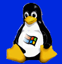
Las aplicaciones multiplataforma son aquellas que pueden funcionar en diferentes sistemas operativos y/o ordenadores, pero el código fuente es el mismo. Los programadores tendemos a escribir programas sólo válidos para nuestra plataforma, olvidándonos de que hay usuarios que trabajan en otras.
Una de las grandes ventajas de las aplicaciones multiplataformas es que dan la libertad al usuario de poder utilizar la máquina que más le guste. Unos usuarios prefieren Linux (como es mi caso), otros prefieren Windows, otros MAC, etc. El usuario debe poder elegir. Normalmente, son los fabricantes los que deciden por nosotros: cuando sacan un nuevo software, sólo está disponible para las máquinas que ellos decidan.
En este cuaderno técnico se explica cómo desarrollar aplicaciones para consola (no gráficas) en entornos Linux que se puedan compilar para máquinas Windows, sin tener que cambiar ni una sola línea de código fuente.
|
Para ello utilizaremos la herramienta CYGWIN. |
Las aplicaciones para consola que había desarrollado hasta ahora sólo funcionaban en máquinas Linux, como por ejemplo el programa skypic-down, para grabar programas en la tarjeta SKYPIC, o el gpbot-down, para hacer lo propio con la tarjeta GPBOT.
Estos programas, junto con la librería stargate, los utilizo para la programación y el control de Robots. Con la idea de hacerlos multiplataforma, para que también los usuarios de Windows los pudiesen utilizar, empecé a realizar pruebas con CYGWIN.
La experiencia resultó positiva, así que he decidido hacer este cuaderno técnico para que no se me olviden los detalles y para que otros puedan también hacer aplicaciones portables.
Sin duda existen otras maneras de hacer código portable. La metodología que aquí emplearemos se basa en las herramientas de desarrollo de GNU (GCC, make, etc) y en la idea de disponer de un único código fuente, para no tener que estar manteniendo dos versiones de nuestra aplicación (la de Linux y la de Windows).
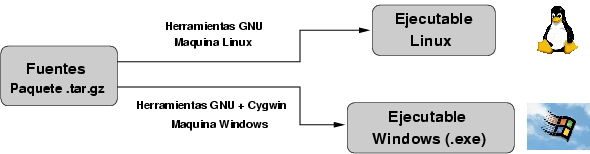
Las aplicaciones que programemos deben cumplir el estándar POSIX (Portable Operating System Interface), donde están definidas las llamadas al sistema y funciones que podemos utilizar para que el programa sea portable a cualquier sistema operativo compatible con POSIX.
Los sistemas Linux/Unix cumplen con este estándar, por eso es sencillo hacer aplicaciones portables entre ellos. Pero como el lector podrá adivinar, Windows no lo es, aunque anunciaron que el NT sí lo sería (pero desgraciadamente no fue así. Microsoft no está por la compatibilidad. Al menos de momento, dado su monopolio).
Para solucionar esto, se creó el proyecto CYGWIN , que implementa una capa POSIX sobre Windows, de manera que cualquier aplicación que cumpla con ese estándar se podrá ejecutar bajo Windows. Con ello se logra el objetivo de la portabilidad, a partir de un código fuente único.
El proyecto CYGWIN consta de dos partes:
Una API POSIX , para que Windows cumpla con este estándar. Es una DLL (cygwin1.dll)
Las herramientas de GNU y otras utilidades compiladas para funcionar bajo Windows/Cygwin. Con ellas compilaremos nuestras aplicaciones, de la misma manera que lo hacemos en Linux.
En el siguiente dibujo se han esquematizado las partes de Cygwin. La cygwin1.dll (gris oscuro) es la que ofrece la capa POSIX . Cualquier aplicación que utilice exclusivamente esta API, será una aplicación portable (color amarillo). Cualquier aplicación que use la API nativa de Windows, no lo será (color azul). Para compilar las aplicaciones portables desde una máquina Windows, necesitamos las herramientas GNU para cygwin (color verde).
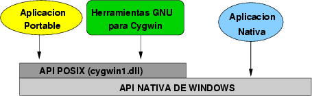
Cygwin , por tanto, NO ES UN EMULADOR. Es una capa intermedia que convierte las llamadas POSIX a llamadas de la API nativa de Windows.
Además, permite que las aplicaciones POSIX “vean” un sistema de ficheros igual al de los sistemas Linux/Unix. Por ejemplo, para abrir el puerto serie se utilizará la llamada OPEN sobre el dispositivo “/dev/ttyS0” (que es el equivalente al COM1 de Windows).
Existen muchas utilidades de Cygwin, como por ejemplo una Shell (la bash de Linux portada), lo que permite trabajar en las máquinas Windows como si de sistemas Linux/Unix se tratase.
Supongamos que hemos desarrollado una aplicación para consola que cumple la norma POSIX y que por tanto es Multiplataforma. ¿Qué tiene que hacer el usuario final para ejecutarla?. Muy sencillo, basta con entregarle el fichero ejecutable .exe y la DLL de Cygwin: cygwin1.dll. Ya está:
mi_aplicación.exe
Con sólo esos dos ficheros, el usuario final podrá ejecutar el programa mi_aplicación.exe. NO SERA NECESARIA NINGUNA OTRA INSTALACIÓN.
Normalmente, desarrollaremos las aplicaciones bajo Linux. Una vez que estén funcionando, comenzamos a portarlas a Cygwin . Si hemos hecho que sea una aplicación 100% POSIX , no surgirá ningún problema. Si no es así, al compilar bajo Cygwin saldrán mensajes de error que tendremos que solucionar.
Supongamos que ya tenemos nuestra aplicación hecha en Linux. Para compilarla para Cygwin necesitamos instalar las herramientas GNU para Cygwin, así como todos los ficheros necesarios para el desarrollo: librerias, ficheros .h, etc. Habrá que instalar bastantes paquetes, sin embargo, esto sólo es necesario para el desarrollador. El usuario final no tiene que hacer nada de esto.
El proceso de instalación se describe en la siguiente sección
Hay muchos paquetes que se pueden instalar. Aquí instalaremos los que vienen por defecto y los necesarios para poder trabajar con nuestro programa de ejemplo. En total la instalación ocupará aproximadamente 90 MB. Se puede conseguir una instalación mucho más reducida, eliminado parte de los paquetes que se instalan por defecto, que son muchos y la mayoría no se usan, pero por simplicidad hemos preferido dejarlo así. No es el objetivo de este cuaderno técnico el describir para qué sirven todos los paquetes.
La instalación aquí mostrada se ha probado en una máquina Windows XP. Se ha empleado el usuario (obijuan) sin permisos de administrador. Los pasos para realizar la instalación son:
Ir a la página del proyecto Cygwin y ejecutar el programa setup.exe, pulsando sobre el icono:
Este programa es el que se utiliza para instalar nuevos paquetes así como eliminarlos. Al ejecutarlos aparecerá una ventana como la siguiente:
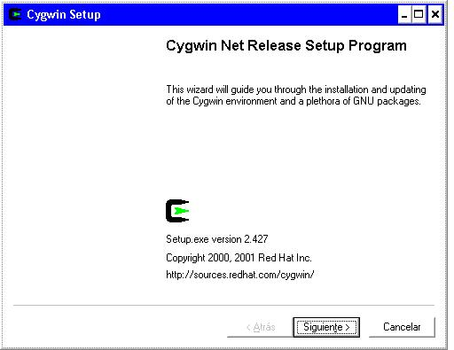
Seleccionar la forma de instalación. La manera más cómoda es la primera, en la que los paquetes seleccionados se bajarán y se instalarán automáticamente. Podemos, si queremos, sólo bajar los paquetes para luego instalarlos localmente.
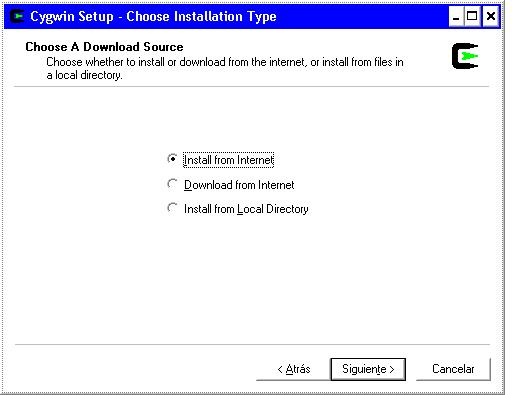
Seleccionar el directorio de instalación. Este será el directorio raiz (/) que verán las aplicaciones de Cygwin. En nuestra instalación hemos utilizado la unidad D:, y el directorio cygwin. La instalación la hemos hecho sólo para el usuario Obijuan (opción just Me activada) y queremos que los ficheros de tipo texto los trate como ficheros Unix.
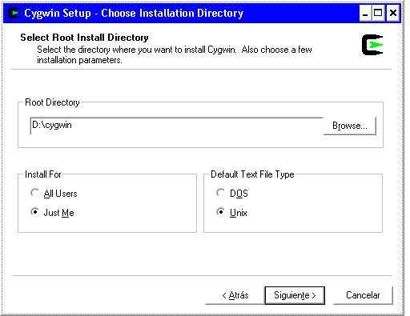
Seleccionar el directorio donde se guardarán los paquetes bajados. En el proceso de instalación, se seleccionarán paquetes. Antes de instalarse se almacenarán en ese directorio, por si más adelante los queremos re-instalar. (Al finalizar el programa setup.exe, no se borrarán). Es muy importante que este directorio no se encuentre dentro del empleado para la instalación de Cygwin (en nuestro caso D:\cygwin).
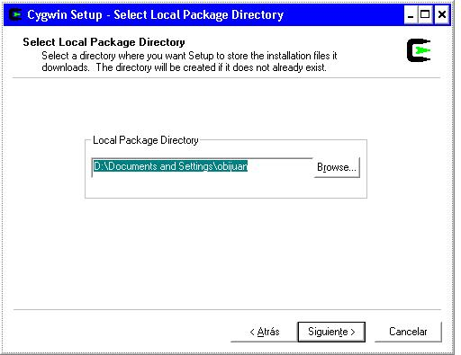
Seleccionar el método de conexión a Internet. En nuestro caso, tenemos conexión directa (no hay ningún PROXY).
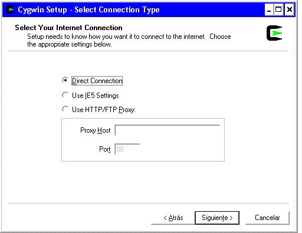
Selección del servidor de donde descargar los paquetes. El que hemos utilizado es: rediris.
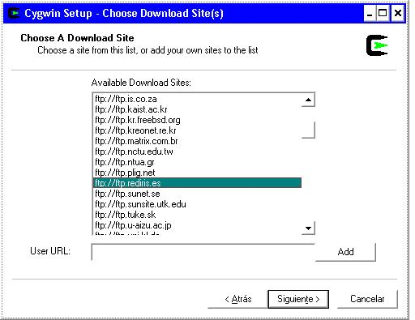
Selección de los paquetes. Por simplicidad, instalaremos todos los paquetes que vienen por defecto (aunque algunos no son necesarios) y además instalarmos los siguientes, que se encuentran en la sección de desarrollo (devel):
binutils
gcc
gcc-mingw
make
pkgconfig (no necesario en para este ejemplo, pero siempre viene bien tenerlo instalado)
Al seleccionarlos, automáticamente se auto-seleccionarán los paquetes de los que dependen.
Instalación de los paquetes. pulsamos OK. Setup.exe comenzará a bajarse los paquetes y posteriormente descomprimirlos e instalarlos. Esto puede llevar su tiempo, sobre todo si la conexión a internet no es muy rápida.
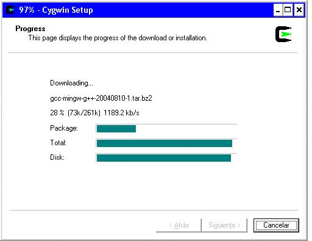
Indicar que añada el icono de Cygwin. Una vez finalizada la descarga e instalación de paquetes, aparecerá la ventana de abajo, donde marcaremos la opción “create icon on Desktop”. Esto sólo hay que indicarlo la primera vez que se ejecuta Setup.exe. Las siguientes veces, si ya está el icono creado, dejamos la casilla en blanco.
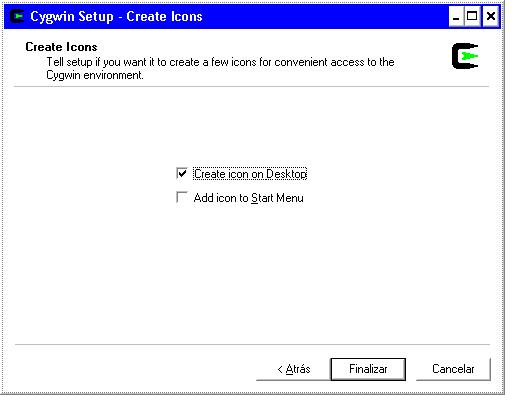
Finalización de la instalación. Pulsamos Finalizar y se nos creará un icono en nuestro escritorio desde el que tendremos acceso a la shell de Cygwin. Aquí puedes ver un pantallazo de un escritorio en el que se ha abierto la shell. La instalación de cygwin ha finalizado.
Aquí puedes ver un pantallazo de la shell en acción. Se trata de la Bash de Linux, portada para Cygwin. Desde ella se pueden ejecutar los comandos típicos de los sistemas Linux/Unix:
$ ls
$ mkdir desarrollo
$ cd desarrollo
etc...
Una vez instaladas las cygwin y comprobado que la shell funciona correctamente vamos a descargarnos las fuentes de un programa de ejemplo, para compilarlo y generar el ejecutable .exe.
Bajar el paquete consola_io-1.0.tar.gz. Se trata de un ejemplo muy sencillo para manejo de la consola en Linux. La página original es: consola_io. El programa de ejemplo que compilaremos mostrará un menú por la pantalla. Mientras el usuario no escoja ninguna opción, habrá una barrita giratoria en la parte inferior.
El paquete lo podemos colocar en cualquier directorio dentro de nuestro “home” de cygwin. Nosotros lo hemos colocado en ~/desarrollo, que se corresponde con el directorio Windows: “D:\Documents and Settings\obijuan\desarrollo”. En “D:\Documents and Settings” es el que cygwin a tomado como nuestro “home”.
Descomprimir el paquete: Dentro de la shell de Cygwin, nos situamos en ~/desarrollo y descomprimimos el paquete:
$ cd desarrollo
$ tar vzxf consola_io-1.0.tar.gz
Esto nos crea el directorio consola_io-1.0 en donse se encuentran las fuentes.
Compilar con make: Usamos la herramienta make de GNU para compilar:
$ cd consola_io-1.0
$ make
Ejecutar el programa de ejemplo. Si las herramientas de desarrollo están correctamente instaladas, las fuentes se habrán compilado y habrá aparecido el fichero ejecutable test-consola-io.exe. Lo ejecutamos:
$ ./test-consola-io.exe
En el siguiente pantallazo podemos ver los procesos de comilación y ejecución del programa:
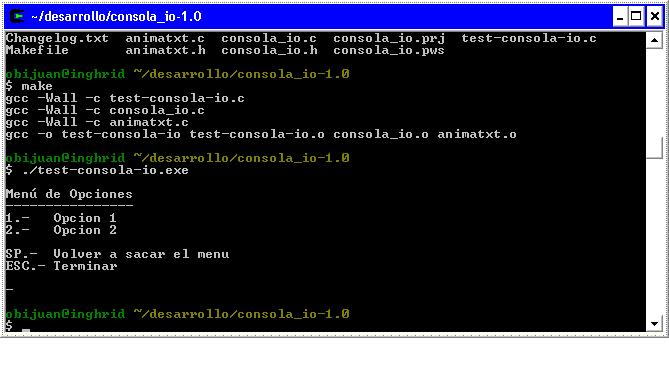
Ejecutar desde MS/DOS. Si ya tengo el programa .exe generado y se lo quiero dar a un usuario de Windows para que lo ejecute, tendré que entregarle el fichero test-consola-io.exe y cygwin1.dll. Se ponen en un directorio cualquier de Windows y se ejecutan el exe. También es posible poner cygwin1.dll en el PATH, o en el directorio en el que se encuentren las DLL's de windows. Aquí podemos ver un pantallazo del programa ejemplo ejecutado desde una ventana de ms-dos:
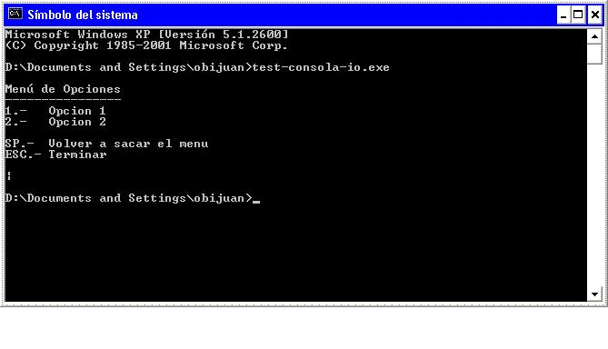
Es muy importante desarrollar aplicaciones portables, a otros sistemas operativos. De esa forma damos libertad al usuario para que pueda escoger la plataforma que mejor se adapte a sus necesidades.
Conseguir que sean portables no es fácil. En este cuaderno técnico hemos explicado cómo programar aplicaciones de consola para que funcionen en sistemas Linux y cómo es posible compilarlos para plataformas Windows, sin modificar las fuentes. Sólo hay que hacer programas que cumplan con la norma POSIX .
La herramienta CYGWIN NO ES UN EMULADOR. Es una capa software que implementa la norma POSIX, para los sistemas operativos Windows. Además, incluye las herramientas de GNU y otras utilidades ya portadas para Windows.
Este cuaderno técnico está restringido a aplicaciones de consola. La mayoría de aplicaciones son gráficas, pero nos puede interesar usar la consola para el desarrollo de: compiladores, ensambladores, grabadores de microcontroladores, servidores, etc. Tenemos la certeza de que estas aplicaciones, si son POSIX, van a funcionar para Windows.
Por el precio de un desarrollo para Linux, tenemos gratis la aplicación en Windows :-)
Página principal del proyecto Cygwin. Aquí se puede encontrar la lista de paquetes oficial y desde donse se puede instalar la última versión. También hay disponible mucha documentación.
Guía del usuario, en inglés. Es la “guía” oficial de Cygwin. Muy completa.
consola_io. Página principal del programa ejemplo utilizado en este cuaderno.
POSIX, (Portable Operating System Interface). Norma que describe las llamadas al sistemas para que las aplicaciones sean portables.
|
Ficheros para descargar |
|
cygwin1.dll (1.1MB) |
DLL con la API de Cygwin. Necesaria para ejecutar los ficheros .exe generados. Versión 1.5.10-3. |
|
test-consola-io.exe (15KB) |
Fichero ejemplo ejecutable, utilizado en este cuaderno técnico |
Este documento se distribuyen bajo licencia FDL por lo que se permite su copia, modificación y distribución, siempre y cuando se mantenga esta nota.
1/Oct/2004: Añadido enlace al Índice de cuadernos técnicos
23/Agosto/2004: Publicado cuaderno técnico en la web
{kind=link}